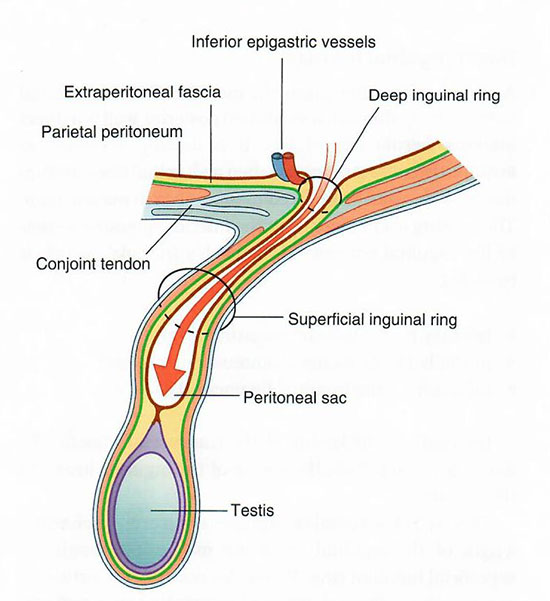
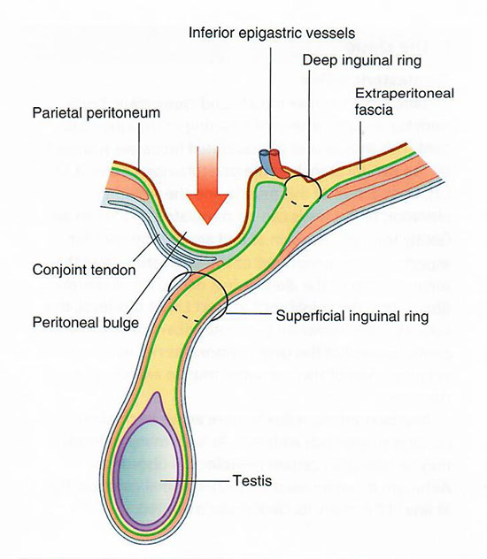

Male Pelvis and Genitalia: Page 6 of 8
An indirect hernia occurs through the deep inguinal ring. A hernia to the medial side of the inferior epigastric artery is a direct hernia.
|  |  |
| Indirect hernia Tap on image to enlarge |
Direct hernia Tap on image to enlarge |
What are the boundaries of the inguinal (Hesselbach's) triangle? |
|
|
Laterally = inferior epigastric artery and vein. |
|
What is the significance of this triangle? |
|
|
This is where direct hernias are found. |
|